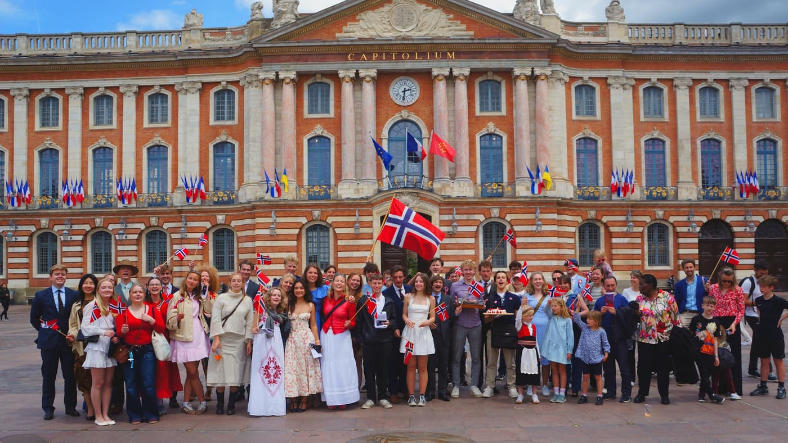

NORGINSA-Programmet
Tilrettelagt studie på fransk, ved INSA Toulouse i Frankrike
Den anerkjente ingeniørskolen INSA i Frankrike tilbyr en femårig master i teknologi. Studiet er spesielt tilrettelagt for norske studenter, med integrert franskundervisning. Du behøver derfor ikke kunne fransk ved opptak.
I Frankrike er realfagspensumet i videregående skole på et høyere nivå enn i Norge. Det gjør det litt vanskeligere for norske elever å lykkes med denne typen studier i Frankrike. Derfor er de norske studentene ved INSA plassert i en samme klasse det første året, slik at undervisningsopplegget kan tilpasses deres behov, med ekstra fokus på matte og fransk. Tilbakemeldinger fra både studenter og lærere viser at denne ordningen fungerer veldig godt.
I andre og tredje studieår går de norske studentene inn i vanlige klasser på INSA, men fortsetter å motta støtteundervisning ut fra individuelle behov. I fjerde og femte studieår er de norske studentene helt vanlige INSA-studenter.
